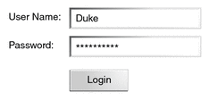
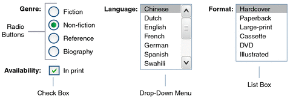
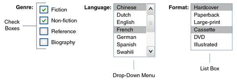

Adding Components to a Page Using HTML Tags
The tags defined by the JavaServer Faces standard HTML tag library represent HTML form components and other basic HTML elements. These components display data or accept data from the user. This data is collected as part of a form and is submitted to the server, usually when the user clicks a button. This section explains how to use each of the component tags shown in Table 7-1.
Table 7-1 The Component Tags
The next section explains the important tag attributes that are common to most component tags. For each of the components discussed in the following sections, Writing Bean Properties explains how to write a bean property bound to a particular component or its value.
Common Component Tag Attributes
Most of the component tags support the attributes shown in Table 7-2.
Table 7-2 Common Component Tag Attributes
Attribute |
Description |
|---|---|
Identifies a bean property and binds the component instance to it. |
|
Uniquely identifies the component. |
|
If set to true, indicates that any events, validation, and conversion associated with the component should happen when request parameter values are applied, |
|
Specifies a condition under which the component should be rendered. If the condition is not satisfied, the component is not rendered. |
|
Specifies a Cascading Style Sheet (CSS) style for the tag. |
|
Specifies a CSS class that contains definitions of the styles. |
|
Specifies the value of the component, in the form of a value expression. |
All the tag attributes (except id) can accept expressions, as defined by the EL, described in Chapter 6, Expression Language.
The id Attribute
The id attribute is not usually required for a component tag but is used when another component or a server-side class must refer to the component. If you don’t include an id attribute, the JavaServer Faces implementation automatically generates a component ID. Unlike most other JavaServer Faces tag attributes, the id attribute takes expressions using only the evaluation syntax described in Immediate Evaluation, which uses the ${} delimiters. For more information on expression syntax, see Value Expressions.
The immediate Attribute
Input components and command components (those that implement the javax.faces.component.ActionSource interface, such as buttons and hyperlinks) can set the immediate attribute to true to force events, validations, and conversions to be processed when request parameter values are applied.
You need to carefully consider how the combination of an input component’s immediate value and a command component’s immediate value determines what happens when the command component is activated.
Assume that you have a page with a button and a field for entering the quantity of a book in a shopping cart. If the immediate attributes of both the button and the field are set to true, the new value entered in the field will be available for any processing associated with the event that is generated when the button is clicked. The event associated with the button as well as the events, validation, and conversion associated with the field are all handled when request parameter values are applied.
If the button’s immediate attribute is set to true but the field’s immediate attribute is set to false, the event associated with the button is processed without updating the field’s local value to the model layer. The reason is that any events, validation, or conversion associated with the field occur after request parameter values are applied.
The bookshowcart.xhtml page of the Duke’s Bookstore case study has examples of components using the immediate attribute to control which component’s data is updated when certain buttons are clicked. The quantity field for each book does not set the immediate attribute, so the value is false (the default).
<h:inputText id="quantity"
size="4"
value="#{item.quantity}"
title="#{bundle.ItemQuantity}">
<f:validateLongRange minimum="1"/>
</h:inputText>The immediate attribute of the Continue Shopping hyperlink is set to true, while the immediate attribute of the Update Quantities hyperlink is set to false:
<h:commandLink id="continue"
action="bookcatalog"
immediate="true">
<h:outputText value="#{bundle.ContinueShopping}"/>
</h:commandLink>
...
<h:commandLink id="update"
action="#{showcart.update}"
immediate="false">
<h:outputText value="#{bundle.UpdateQuantities}"/>
</h:commandLink>If you click the Continue Shopping hyperlink, none of the changes entered into the quantity input fields will be processed. If you click the Update Quantities hyperlink, the values in the quantity fields will be updated in the shopping cart.
The rendered Attribute
A component tag uses a Boolean EL expression along with the rendered attribute to determine whether the component will be rendered. For example, the commandLink component in the following section of a page is not rendered if the cart contains no items:
<h:commandLink id="check"
...
rendered="#{cart.numberOfItems > 0}">
<h:outputText
value="#{bundle.CartCheck}"/>
</h:commandLink>Unlike nearly every other JavaServer Faces tag attribute, the rendered attribute is restricted to using rvalue expressions. As explained in Value and Method Expressions, these rvalue expressions can only read data; they cannot write the data back to the data source. Therefore, expressions used with rendered attributes can use the arithmetic operators and literals that rvalue expressions can use but lvalue expressions cannot use. For example, the expression in the preceding example uses the > operator.
Note - In this example and others, bundle refers to a java.util.ResourceBundle file that contains locale-specific strings to be displayed. Resource bundles are discussed in Chapter 17, Internationalizing and Localizing Web Applications.
The style and styleClass Attributes
The style and styleClass attributes allow you to specify CSS styles for the rendered output of your tags. Displaying Error Messages with the h:message and h:messages Tags describes an example of using the style attribute to specify styles directly in the attribute. A component tag can instead refer to a CSS class.
The following example shows the use of a dataTable tag that references the style class list-background:
<h:dataTable id="items"
...
styleClass="list-background"
value="#{cart.items}"
var="book">The style sheet that defines this class is stylesheet.css, which will be included in the application. For more information on defining styles, see Cascading Style Sheets Specification at http://www.w3.org/Style/CSS/.
The value and binding Attributes
A tag representing an output component uses the value and binding attributes to bind its component’s value or instance, respectively, to a data object.
Adding HTML Head and Body Tags
The HTML head (h:head) and body (h:body) tags add HTML page structure to JavaServer Faces web pages.
The h:head tag represents the head element of an HTML page
The h:body tag represents the body element of an HTML page
The following is an example of an XHTML page using the usual head and body markup tags:
<!DOCTYPE html PUBLIC "-//W3C//DTD XHTML 1.0 Transitional//EN"
"http://www.w3.org/TR/xhtml1/DTD/xhtml1-transitional.dtd">
<html xmlns="http://www.w3.org/1999/xhtml">
<head>
<title>Add a title</title>
</head>
<body>
Add Content
</body>
</html>The following is an example of an XHTML page using h:head and h:body tags:
<!DOCTYPE html PUBLIC "-//W3C//DTD XHTML 1.0 Transitional//EN"
"http://www.w3.org/TR/xhtml1/DTD/xhtml1-transitional.dtd">
<html xmlns="http://www.w3.org/1999/xhtml"
xmlns:h="http://java.sun.com/jsf/html">
<h:head>
Add a title
</h:head>
<h:body>
Add Content
</h:body>
</html>Both of the preceding example code segments render the same HTML elements. The head and body tags are useful mainly for resource relocation. For more information on resource relocation, see Resource Relocation Using h:outputScript and h:outputStylesheet Tags.
Adding a Form Component
An h:form tag represents an input form, which includes child components that can contain data that is either presented to the user or submitted with the form.
Figure 7-1 shows a typical login form in which a user enters a user name and password, then submits the form by clicking the Login button.
Figure 7-1 A Typical Form
The h:form tag represents the form on the page and encloses all the components that display or collect data from the user, as shown here:
<h:form> ... other JavaServer Faces tags and other content... </h:form>
The h:form tag can also include HTML markup to lay out the components on the page. Note that the h:form tag itself does not perform any layout; its purpose is to collect data and to declare attributes that can be used by other components in the form.
A page can include multiple h:form tags, but only the values from the form submitted by the user will be included in the postback request.
Using Text Components
Text components allow users to view and edit text in web applications. The basic types of text components are as follows:
Label, which displays read-only text
Text field, which allows users to enter text, often to be submitted as part of a form
Text area, which is a type of text field that allows users to enter multiple lines of text
Password field, which is a type of text field that displays a set of characters, such as asterisks, instead of the password text that the user enters
Figure 7-2 shows examples of these text components.
Figure 7-2 Example Text Components

Text components can be categorized as either input or output. A JavaServer Faces output component is rendered as read-only text. An example is a label. A JavaServer Faces input component is rendered as editable text. An example is a text field.
The input and output components can each be rendered in various ways to display more specialized text.
Table 7-3 lists the tags that represent the input components.
Table 7-3 Input Tags
Tag |
Function |
|---|---|
Allows a page author to include a hidden variable in a page |
|
The standard password field: accepts one line of text with no spaces and displays it as a set of asterisks as it is typed |
|
The standard text field: accepts a one-line text string |
|
The standard text area: accepts multiple lines of text |
The input tags support the tag attributes shown in Table 7-4 in addition to those described in Common Component Tag Attributes. Note that this table does not include all the attributes supported by the input tags but just those that are used most often. For the complete list of attributes, refer to the documentation at http://docs.oracle.com/javaee/6/javaserverfaces/2.1/docs/vdldocs/facelets/.
Table 7-4 Input Tag Attributes
Attribute |
Description |
|---|---|
Identifies a converter that will be used to convert the component’s local data. See Using the Standard Converters for more information on how to use this attribute. |
|
converterMessage |
Specifies an error message to display when the converter registered on the component fails. |
dir |
Specifies the direction of the text displayed by this component. Acceptable values are LTR, meaning left-to-right, and RTL, meaning right-to-left. |
label |
Specifies a name that can be used to identify this component in error messages. |
lang |
Specifies the code for the language used in the rendered markup, such as en_US. |
required |
Takes a boolean value that indicates whether the user must enter a value in this component. |
requiredMessage |
Specifies an error message to display when the user does not enter a value into the component. |
Identifies a method expression pointing to a managed bean method that performs validation on the component’s data. See Referencing a Method That Performs Validation for an example of using the f:validator tag. |
|
validatorMessage |
Specifies an error message to display when the validator registered on the component fails to validate the component’s local value. |
Identifies a method expression that points to a managed bean method that handles the event of entering a value in this component. See Referencing a Method That Handles a Value-Change Event for an example of using valueChangeListener. |
Table 7-5 lists the tags that represent the output components.
Table 7-5 Output Tags
Tag |
Function |
|---|---|
Displays a formatted message |
|
The standard read-only label: displays a component as a label for a specified input field |
|
Displays an <a href> tag that links to another page without generating an action event |
|
Displays a one-line text string |
The output tags support the converter tag attribute in addition to those listed in Common Component Tag Attributes.
The rest of this section explains how to use some of the tags listed in Table 7-3 and Table 7-5. The other tags are written in a similar way.
Rendering a Text Field with the h:inputText Tag
The h:inputText tag is used to display a text field. A similar tag, the h:outputText tag, displays a read-only, single-line string. This section shows you how to use the h:inputText tag. The h:outputText tag is written in a similar way.
Here is an example of an h:inputText tag:
<h:inputText id="name"
label="Customer Name"
size="30"
value="#{cashier.name}"
required="true"
requiredMessage="#{bundle.ReqCustomerName}">
<f:valueChangeListener
type="dukesbookstore.listeners.NameChanged" />
</h:inputText>The label attribute specifies a user-friendly name that will be used in the substitution parameters of error messages displayed for this component.
The value attribute refers to the name property of a managed bean named CashierBean. This property holds the data for the name component. After the user submits the form, the value of the name property in CashierBean will be set to the text entered in the field corresponding to this tag.
The required attribute causes the page to reload, displaying errors, if the user does not enter a value in the name text field. The JavaServer Faces implementation checks whether the value of the component is null or is an empty string.
If your component must have a non-null value or a String value at least one character in length, you should add a required attribute to your tag and set its value to true. If your tag has a required attribute that is set to true and the value is null or a zero-length string, no other validators that are registered on the tag are called. If your tag does not have a required attribute set to true, other validators that are registered on the tag are called, but those validators must handle the possibility of a null or zero-length string. See Validating Null and Empty Strings for more information.
Rendering a Password Field with the h:inputSecret Tag
The h:inputSecret tag renders an <input type="password"> HTML tag. When the user types a string into this field, a row of asterisks is displayed instead of the text typed by the user. Here is an example:
<h:inputSecret redisplay="false"
value="#{LoginBean.password}" />In this example, the redisplay attribute is set to false. This will prevent the password from being displayed in a query string or in the source file of the resulting HTML page.
Rendering a Label with the h:outputLabel Tag
The h:outputLabel tag is used to attach a label to a specified input field for the purpose of making it accessible. The following page uses an h:outputLabel tag to render the label of a check box:
<h:selectBooleanCheckbox id="fanClub"
binding="#{cashier.specialOffer}" />
<h:outputLabel for="fanClub"
binding="#{cashier.specialOfferText}" >
<h:outputText id="fanClubLabel"
value="#{bundle.DukeFanClub}" />
</h:outputLabel>
...The for attribute of the h:outputLabel tag maps to the id of the input field to which the label is attached. The h:outputText tag nested inside the h:outputLabel tag represents the label component. The value attribute on the h:outputText tag indicates the text that is displayed next to the input field.
Instead of using an h:outputText tag for the text displayed as a label, you can simply use the h:outputLabel tag’s value attribute. The following code snippet shows what the previous code snippet would look like if it used the value attribute of the h:outputLabel tag to specify the text of the label:
<h:selectBooleanCheckbox id="fanClub"
binding="#{cashier.specialOffer}" />
<h:outputLabel for="fanClub"
binding="#{cashier.specialOfferText}"
value="#{bundle.DukeFanClub}" />
...
Rendering a Hyperlink with the h:outputLink Tag
The h:outputLink tag is used to render a hyperlink that, when clicked, loads another page but does not generate an action event. You should use this tag instead of the h:commandLink tag if you always want the URL specified by the h:outputLink tag’s value attribute to open and do not want any processing to be performed when the user clicks the link. Here is an example:
<h:outputLink value="javadocs">
Documentation for this demo
</h:outputLink>The text in the body of the h:outputLink tag identifies the text that the user clicks to get to the next page.
Displaying a Formatted Message with the h:outputFormat Tag
The h:outputFormat tag allows display of concatenated messages as a MessageFormat pattern, as described in the API documentation for java.text.MessageFormat. Here is an example of an h:outputFormat tag:
<h:outputFormat value="Hello, {0}!">
<f:param value="#{hello.name}"/>
</h:outputFormat>The value attribute specifies the MessageFormat pattern. The f:param tag specifies the substitution parameters for the message. The value of the parameter replaces the {0} in the sentence. If the value of "#{hello.name}" is “Bill”, the message displayed in the page is as follows:
Hello, Bill!
An h:outputFormat tag can include more than one f:param tag for those messages that have more than one parameter that must be concatenated into the message. If you have more than one parameter for one message, make sure that you put the f:param tags in the proper order so that the data is inserted in the correct place in the message. Here is the preceding example modified with an additional parameter:
<h:outputFormat value="Hello, {0}! You are visitor number {1} to the page.">
<f:param value="#{hello.name}" />
<f:param value="#{bean.numVisitor}"/>
</h:outputFormat>The value of {1} is replaced by the second parameter. The parameter is an EL expression, bean.numVisitor, where the property numVisitor of the managed bean bean keeps track of visitors to the page. This is an example of a value-expression-enabled tag attribute accepting an EL expression. The message displayed in the page is now as follows:
Hello, Bill! You are visitor number 10 to the page.
Using Command Component Tags for Performing Actions and Navigation
In JavaServer Faces applications, the button and hyperlink component tags are used to perform actions, such as submitting a form, and for navigating to another page. These tags are called command component tags because they perform an action when activated.
The h:commandButton tag is rendered as a button. The h:commandLink tag is rendered as a hyperlink.
In addition to the tag attributes listed in Common Component Tag Attributes, the h:commandButton and h:commandLink tags can use the following attributes:
action, which is either a logical outcome String or a method expression pointing to a bean method that returns a logical outcome String. In either case, the logical outcome String is used to determine what page to access when the command component tag is activated.
actionListener, which is a method expression pointing to a bean method that processes an action event fired by the command component tag.
See Referencing a Method That Performs Navigation for more information on using the action attribute. See Referencing a Method That Handles an Action Event for details on using the actionListener attribute.
Rendering a Button with the h:commandButton Tag
If you are using an h:commandButton component tag, the data from the current page is processed when a user clicks the button, and the next page is opened. Here is an example of the h:commandButton tag:
<h:commandButton value="Submit"
action="#{cashierBean.submit}"/>Clicking the button will cause the submit method of CashierBean to be invoked because the action attribute references this method. The submit method performs some processing and returns a logical outcome.
The value attribute of the example h:commandButton tag references the button’s label. For information on how to use the action attribute, see Referencing a Method That Performs Navigation.
Rendering a Hyperlink with the h:commandLink Tag
The h:commandLink tag represents an HTML hyperlink and is rendered as an HTML <a> element.
A h:commandLink tag must include a nested h:outputText tag, which represents the text that the user clicks to generate the event. Here is an example:
<h:commandLink id="Duke" action="bookstore">
<f:actionListener
type="dukesbookstore.listeners.LinkBookChangeListener" />
<h:outputText value="#{bundle.Book201}"/>
/h:commandLink>This tag will render the following HTML:
<a id="_idt16:Duke" href="#"
onclick="mojarra.jsfcljs(document.getElementById('j_idt16'),
{'j_idt16:Duke':'j_idt16:Duke'},'');
return false;">My Early Years: Growing Up on Star7, by Duke</a>
Note - The h:commandLink tag will render JavaScript scripting language. If you use this tag, make sure that your browser is enabled for JavaScript technology.
Adding Graphics and Images with the h:graphicImage Tag
In a JavaServer Faces application, use the h:graphicImage tag to render an image on a page:
<h:graphicImage id="mapImage" url="/resources/images/book_all.jpg"/>
In this example, the url attribute specifies the path to the image. The URL of the example tag begins with a slash (/), which adds the relative context path of the web application to the beginning of the path to the image.
Alternatively, you can use the facility described in Web Resources to point to the image location. Here are two examples:
<h:graphicImage id="mapImage"
name="book_all.jpg"
library="images"
alt="#{bundle.ChooseBook}"
usemap="#bookMap" /><h:graphicImage value="#{resource['images:wave.med.gif']}"/>You can use similar syntax to refer to an image in a style sheet. The following syntax in a style sheet specifies that the image is to be found at resources/img/top-background.jpg:
header {
position: relative;
height: 150px;
background: #fff url(#{resource['img:top-background.jpg']}) repeat-x;
...
Laying Out Components with the h:panelGrid and h:panelGroup Tags
In a JavaServer Faces application, you use a panel as a layout container for a set of other components. A panel is rendered as an HTML table. Table 7-6 lists the tags used to create panels.
Table 7-6 Panel Component Tags
Tag |
Attributes |
Function |
|---|---|---|
h:panelGrid |
columns,columnClasses, footerClass, headerClass, panelClass, rowClasses |
Displays a table |
h:panelGroup |
layout |
Groups a set of components under one parent |
The h:panelGrid tag is used to represent an entire table. The h:panelGroup tag is used to represent rows in a table. Other tags are used to represent individual cells in the rows.
The columns attribute defines how to group the data in the table and therefore is required if you want your table to have more than one column. The h:panelGrid tag also has a set of optional attributes that specify CSS classes: columnClasses, footerClass, headerClass, panelClass, and rowClasses.
If the headerClass attribute value is specified, the h:panelGrid tag must have a header as its first child. Similarly, if a footerClass attribute value is specified, the h:panelGrid tag must have a footer as its last child.
Here is an example:
<h:panelGrid columns="2"
headerClass="list-header"
styleClass="list-background"
rowClasses="list-row-even, list-row-odd"
summary="#{bundle.CustomerInfo}"
title="#{bundle.Checkout}">
<f:facet name="header">
<h:outputText value="#{bundle.Checkout}"/>
</f:facet>
<h:outputLabel for="name" value="#{bundle.Name}" />
<h:inputText id="name"
size="30"
value="#{cashier.name}"
required="true"
requiredMessage="#{bundle.ReqCustomerName}">
<f:valueChangeListener
type="dukesbookstore.listeners.NameChanged" />
</h:inputText>
<h:message styleClass="error-message" for="name"/>
<h:outputLabel for="ccno" value="#{bundle.CCNumber}"/>
<h:inputText id="ccno"
size="19"
value="#{cashier.creditCardNumber}"
required="true"
requiredMessage="#{bundle.ReqCreditCard}" >
<f:converter converterId="ccno"/>
<f:validateRegex
pattern="\d{16}|\d{4} \d{4} \d{4} \d{4}|\d{4}-\d{4}-\d{4}-\d{4}" />
</h:inputText>
<h:message styleClass="error-message" for="ccno"/>
...
</h:panelGrid>The preceding h:panelGrid tag is rendered as a table that contains components in which a customer inputs personal information. This h:panelGrid tag uses style sheet classes to format the table. The following code shows the list-header definition:
.list-header {
background-color: #ffffff;
color: #000000;
text-align: center;
}Because the h:panelGrid tag specifies a headerClass, the h:panelGrid tag must contain a header. The example h:panelGrid tag uses an f:facet tag for the header. Facets can have only one child, so an h:panelGroup tag is needed if you want to group more than one component within an f:facet. The example h:panelGrid tag has only one cell of data, so an h:panelGroup tag is not needed. (For more information about facets, see Using Data-Bound Table Components.)
The h:panelGroup tag has an attribute, layout, in addition to those listed in Common Component Tag Attributes. If the layout attribute has the value block, an HTML div element is rendered to enclose the row; otherwise, an HTML span element is rendered to enclose the row. If you are specifying styles for the h:panelGroup tag, you should set the layout attribute to block in order for the styles to be applied to the components within the h:panelGroup tag. You should do this because styles, such as those that set width and height, are not applied to inline elements, which is how content enclosed by the span element is defined.
An h:panelGroup tag can also be used to encapsulate a nested tree of components so that the tree of components appears as a single component to the parent component.
Data, represented by the nested tags, is grouped into rows according to the value of the columns attribute of the h:panelGrid tag. The columns attribute in the example is set to 2, and therefore the table will have two columns. The column in which each component is displayed is determined by the order in which the component is listed on the page modulo 2. So, if a component is the fifth one in the list of components, that component will be in the 5 modulo 2 column, or column 1.
Displaying Components for Selecting One Value
Another commonly used component is one that allows a user to select one value, whether it is the only value available or one of a set of choices. The most common tags for this kind of component are as follows:
An h:selectBooleanCheckbox tag, displayed as a check box, which represents a Boolean state
An h:selectOneRadio tag, displayed as a set of radio buttons
An h:selectOneMenu tag, displayed as a drop-down menu, with a scrollable list
An h:selectOneListbox tag, displayed as a list box, with an unscrollable list
Figure 7-3 shows examples of these components.
Figure 7-3 Example Components for Selecting One Item
Displaying a Check Box Using the h:selectBooleanCheckbox Tag
The h:selectBooleanCheckbox tag is the only tag that JavaServer Faces technology provides for representing a Boolean state.
Here is an example that shows how to use the h:selectBooleanCheckbox tag:
<h:selectBooleanCheckbox id="fanClub"
binding="#{cashier.specialOffer}" />
<h:outputLabel for="fanClub"
binding="#{cashier.specialOfferText}"
value="#{bundle.DukeFanClub}" />This example tag displays a check box to allow users to indicate whether they want to join the Duke Fan Club. The label for the check box is rendered by the h:outputLabel tag. The text is represented by the value attribute.
Displaying a Menu Using the h:selectOneMenu Tag
A component that allows the user to select one value from a set of values can be rendered as a list box, a set of radio buttons, or a menu. This section describes the h:selectOneMenu tag. The h:selectOneRadio and h:selectOneListbox tags are used in a similar way. The h:selectOneListbox tag is similar to the h:selectOneMenu tag except that h:selectOneListbox defines a size attribute that determines how many of the items are displayed at once.
The h:selectOneMenu tag represents a component that contains a list of items from which a user can choose one item. This menu component is also commonly known as a drop-down list or a combo box. The following code snippet shows how the h:selectOneMenu tag is used to allow the user to select a shipping method:
<h:selectOneMenu id="shippingOption"
required="true"
value="#{cashier.shippingOption}">
<f:selectItem itemValue="2"
itemLabel="#{bundle.QuickShip}"/>
<f:selectItem itemValue="5"
itemLabel="#{bundle.NormalShip}"/>
<f:selectItem itemValue="7"
itemLabel="#{bundle.SaverShip}"/>
</h:selectOneMenu>The value attribute of the h:selectOneMenu tag maps to the property that holds the currently selected item’s value. You are not required to provide a value for the currently selected item. If you don’t provide a value, the first item in the list is selected by default.
Like the h:selectOneRadio tag, the h:selectOneMenu tag must contain either an f:selectItems tag or a set of f:selectItem tags for representing the items in the list. Using the f:selectItem and f:selectItems Tags describes these tags.
Displaying Components for Selecting Multiple Values
In some cases, you need to allow your users to select multiple values rather than just one value from a list of choices. You can do this using one of the following component tags:
An h:selectManyCheckbox tag, displayed as a set of check boxes
Figure 7-4 shows examples of these components.
Figure 7-4 Example Components for Selecting Multiple Values
These tags allow the user to select zero or more values from a set of values. This section explains the h:selectManyCheckbox tag. The h:selectManyListbox and h:selectManyMenu tags are used in a similar way.
Unlike a menu, a list box displays a subset of items in a box; a menu displays only one item at a time when the user is not selecting the menu. The size attribute of the h:selectManyListbox tag determines the number of items displayed at one time. The list box includes a scroll bar for scrolling through any remaining items in the list.
The h:selectManyCheckbox tag renders a set of check boxes, with each check box representing one value that can be selected:
<h:selectManyCheckbox id="newslettercheckbox"
layout="pageDirection"
value="#{cashier.newsletters}">
<f:selectItems value="#{cashier.newsletterItems}"/>
</h:selectManyCheckbox>The value attribute of the h:selectManyCheckbox tag identifies the newsletters property of the CashierBean managed bean. This property holds the values of the currently selected items from the set of check boxes. You are not required to provide a value for the currently selected items. If you don’t provide a value, the first item in the list is selected by default. In the CashierBean managed bean, this value is instantiated to 0, so no items are selected by default.
The layout attribute indicates how the set of check boxes is arranged on the page. Because layout is set to pageDirection, the check boxes are arranged vertically. The default is lineDirection, which aligns the check boxes horizontally.
The h:selectManyCheckbox tag must also contain a tag or set of tags representing the set of check boxes. To represent a set of items, you use the f:selectItems tag. To represent each item individually, you use the f:selectItem tag. The following section explains these tags in more detail.
Using the f:selectItem and f:selectItems Tags
The f:selectItem and f:selectItems tags represent components that can be nested inside a component that allows you to select one or multiple items. An f:selectItem tag contains the value, label, and description of a single item. An f:selectItems tag contains the values, labels, and descriptions of the entire list of items.
You can use either a set of f:selectItem tags or a single f:selectItems tag within your component tag.
The advantages of using the f:selectItems tag are as follows.
Items can be represented by using different data structures, including Array, Map, and Collection. The value of the f:selectItems tag can represent even a generic collection of POJOs.
Different lists can be concatenated into a single component, and the lists can be grouped within the component.
Values can be generated dynamically at runtime.
The advantages of using f:selectItem are as follows:
Items in the list can be defined from the page.
Less code is needed in the bean for the f:selectItem properties.
The rest of this section shows you how to use the f:selectItems and f:selectItem tags.
Using the f:selectItems Tag
The following example from Displaying Components for Selecting Multiple Values shows how to use the h:selectManyCheckbox tag:
<h:selectManyCheckbox id="newslettercheckbox"
layout="pageDirection"
value="#{cashier.newsletters}">
<f:selectItems value="#{cashier.newsletterItems}"/>
</h:selectManyCheckbox>The value attribute of the f:selectItems tag is bound to the managed bean property cashier.newsletterItems. The individual SelectItem objects are created programmatically in the managed bean.
See UISelectItems Properties for information on how to write a managed bean property for one of these tags.
Using the f:selectItem Tag
The f:selectItem tag represents a single item in a list of items. Here is the example from Displaying a Menu Using the h:selectOneMenu Tag once again:
<h:selectOneMenu id="shippingOption"
required="true"
value="#{cashier.shippingOption}">
<f:selectItem itemValue="2"
itemLabel="#{bundle.QuickShip}"/>
<f:selectItem itemValue="5"
itemLabel="#{bundle.NormalShip}"/>
<f:selectItem itemValue="7"
itemLabel="#{bundle.SaverShip}"/>
</h:selectOneMenu>The itemValue attribute represents the value for the f:selectItem tag. The itemLabel attribute represents the String that appears in the drop-down menu component on the page.
The itemValue and itemLabel attributes are value-binding-enabled, meaning that they can use value-binding expressions to refer to values in external objects. These attributes can also define literal values, as shown in the example h:selectOneMenu tag.
Displaying the Results from Selection Components
If you display components that allow a user to select values, you may also want to display the result of the selection.
For example, you might want to thank a user who selected the checkbox to join the Duke Fan Club, as described in Displaying a Check Box Using the h:selectBooleanCheckbox Tag. Because the checkbox is bound to the specialOffer property of CashierBean, a javax.faces.component.UISelectBoolean value, you can call the isSelected method of the property to determine whether to render a thank-you message:
<h:outputText value="#{bundle.DukeFanClubThanks}"
rendered="#{cashier.specialOffer.isSelected()}"/>Similarly, you might want to acknowledge that a user subscribed to newsletters using the h:selectManyCheckbox tag, as described in Displaying Components for Selecting Multiple Values. To do so, you can retrieve the value of the newsletters property, the String array that holds the selected items:
<h:outputText value="#{bundle.NewsletterThanks}"
rendered="#{!empty cashier.newsletters}"/>
<ul>
<ui:repeat value="#{cashier.newsletters}" var="nli">
<li><h:outputText value="#{nli}" /></li>
</ui:repeat>
</ul>An introductory thank-you message is displayed only if the newsletters array is not empty. Then a ui:repeat tag, a simple way to show values in a loop, displays the contents of the selected items in an itemized list. (This tag is listed in Table 5-2.)
Using Data-Bound Table Components
Data-bound table components display relational data in a tabular format. In a JavaServer Faces application, the h:dataTable component tag supports binding to a collection of data objects and displays the data as an HTML table. The h:column tag represents a column of data within the table, iterating over each record in the data source, which is displayed as a row. Here is an example:
<h:dataTable id="items"
captionStyle="font-weight:bold"
columnClasses="list-column-center, list-column-left,
list-column-right, list-column-center"
footerClass="list-footer"
headerClass="list-header"
rowClasses="list-row-even, list-row-odd"
styleClass="list-background"
summary="#{bundle.ShoppingCart}"
value="#{cart.items}"
border="1"
var="item">
<h:column>
<f:facet name="header">
<h:outputText value="#{bundle.ItemQuantity}" />
</f:facet>
<h:inputText id="quantity"
size="4"
value="#{item.quantity}"
title="#{bundle.ItemQuantity}">
<f:validateLongRange minimum="1"/>
</h:inputText>
<h:message for="quantity"/>
</h:column>
<h:column>
<f:facet name="header">
<h:outputText value="#{bundle.ItemTitle}"/>
</f:facet>
<h:commandLink action="#{showcart.details}">
<h:outputText value="#{item.item.title}"/>
</h:commandLink>
</h:column>
...
<f:facet name="footer"
<h:panelGroup>
<h:outputText value="#{bundle.Subtotal}"/>
<h:outputText value="#{cart.total}" />
<f:convertNumber currencySymbol="$" type="currency" />
</h:outputText>
</h:panelGroup>
</f:facet>
<f:facet name="caption">
<h:outputText value="#{bundle.Caption}"/>
</f:facet>
</h:dataTable>The example h:dataTable tag displays the books in the shopping cart, as well as the quantity of each book in the shopping cart, the prices, and a set of buttons the user can click to remove books from the shopping cart.
The h:column tags represent columns of data in a data component. While the data component is iterating over the rows of data, it processes the column component associated with each h:column tag for each row in the table.
The h:dataTable tag shown in the preceding code example iterates through the list of books (cart.items) in the shopping cart and displays their titles, authors, and prices. Each time the h:dataTable tag iterates through the list of books, it renders one cell in each column.
The h:dataTable and h:column tags use facets to represent parts of the table that are not repeated or updated. These parts include headers, footers, and captions.
In the preceding example, h:column tags include f:facet tags for representing column headers or footers. The h:column tag allows you to control the styles of these headers and footers by supporting the headerClass and footerClass attributes. These attributes accept space-separated lists of CSS classes, which will be applied to the header and footer cells of the corresponding column in the rendered table.
Facets can have only one child, so an h:panelGroup tag is needed if you want to group more than one component within an f:facet. Because the facet tag representing the footer includes more than one tag, the h:panelGroup tag is needed to group those tags. Finally, this h:dataTable tag includes an f:facet tag with its name attribute set to caption, causing a table caption to be rendered above the table.
This table is a classic use case for a data component because the number of books might not be known to the application developer or the page author when that application is developed. The data component can dynamically adjust the number of rows of the table to accommodate the underlying data.
The value attribute of an h:dataTable tag references the data to be included in the table. This data can take the form of any of the following:
A list of beans
An array of beans
A single bean
A javax.faces.model.DataModel object
A java.sql.ResultSet object
A javax.servlet.jsp.jstl.sql.Result object
A javax.sql.RowSet object
All data sources for data components have a javax.faces.model.DataModel wrapper. Unless you explicitly construct a DataModel wrapper, the JavaServer Faces implementation will create one around data of any of the other acceptable types. See Writing Bean Properties for more information on how to write properties for use with a data component.
The var attribute specifies a name that is used by the components within the h:dataTable tag as an alias to the data referenced in the value attribute of h:dataTable.
In the example h:dataTable tag, the value attribute points to a list of books. The var attribute points to a single book in that list. As the h:dataTable tag iterates through the list, each reference to item points to the current book in the list.
The h:dataTable tag also has the ability to display only a subset of the underlying data. This feature is not shown in the preceding example. To display a subset of the data, you use the optional first and rows attributes.
The first attribute specifies the first row to be displayed. The rows attribute specifies the number of rows, starting with the first row, to be displayed. For example, if you wanted to display records 2 through 10 of the underlying data, you would set first to 2 and rows to 9. When you display a subset of the data in your pages, you might want to consider including a link or button that causes subsequent rows to display when clicked. By default, both first and rows are set to zero, and this causes all the rows of the underlying data to display.
Table 7-7 shows the optional attributes for the h:dataTable tag.
Table 7-7 Optional Attributes for the h:dataTable Tag
Attribute |
Defines Styles for |
|---|---|
captionClass |
Table caption |
columnClasses |
All the columns |
footerClass |
Footer |
headerClass |
Header |
rowClasses |
Rows |
styleClass |
The entire table |
Each of the attributes in Table 7-7 can specify more than one style. If columnClasses or rowClasses specifies more than one style, the styles are applied to the columns or rows in the order that the styles are listed in the attribute. For example, if columnClasses specifies styles list-column-center and list-column-right and if the table has two columns, the first column will have style list-column-center, and the second column will have style list-column-right.
If the style attribute specifies more styles than there are columns or rows, the remaining styles will be assigned to columns or rows starting from the first column or row. Similarly, if the style attribute specifies fewer styles than there are columns or rows, the remaining columns or rows will be assigned styles starting from the first style.
Displaying Error Messages with the h:message and h:messages Tags
The h:message and h:messages tags are used to display error messages when conversion or validation fails. The h:message tag displays error messages related to a specific input component, whereas the h:messages tag displays the error messages for the entire page.
Here is an example h:message tag from the guessnumber application:
<p>
<h:inputText id="userNo"
title="Type a number from 0 to 10:"
value="#{userNumberBean.userNumber}">
<f:validateLongRange minimum="#{userNumberBean.minimum}"
maximum="#{userNumberBean.maximum}"/>
</h:inputText>
<h:commandButton id="submit" value="Submit"
action="response"/>
</p>
<h:message showSummary="true" showDetail="false"
style="color: #d20005;
font-family: 'New Century Schoolbook', serif;
font-style: oblique;
text-decoration: overline"
id="errors1"
for="userNo"/>The for attribute refers to the ID of the component that generated the error message. The error message is displayed at the same location that the h:message tag appears in the page. In this case, the error message will appear after the Submit button.
The style attribute allows you to specify the style of the text of the message. In the example in this section, the text will be a shade of red, New Century Schoolbook, serif font family, and oblique style, and a line will appear over the text. The message and messages tags support many other attributes for defining styles. For more information on these attributes, refer to the documentation at http://docs.oracle.com/javaee/6/javaserverfaces/2.1/docs/vdldocs/facelets/.
Another attribute supported by the h:messages tag is the layout attribute. Its default value is list, which indicates that the messages are displayed in a bullet list using the HTML ul and li elements. If you set the attribute value to table, the messages will be rendered in a table using the HTML table element.
The preceding example shows a standard validator that is registered on the input component. The message tag displays the error message that is associated with this validator when the validator cannot validate the input component’s value. In general, when you register a converter or validator on a component, you are queueing the error messages associated with the converter or validator on the component. The h:message and h:messages tags display the appropriate error messages that are queued on the component when the validators or converters registered on that component fail to convert or validate the component’s value.
Standard error messages are provided with standard converters and standard validators. An application architect can override these standard messages and supply error messages for custom converters and validators by registering custom error messages with the application.
Creating Bookmarkable URLs with the h:button and h:link Tags
The ability to create bookmarkable URLs refers to the ability to generate hyperlinks based on a specified navigation outcome and on component parameters.
In HTTP, most browsers by default send GET requests for URL retrieval and POST requests for data processing. The GET requests can have query parameters and can be cached, which is not advised for POST requests, which send data to servers for processing. The other JavaServer Faces tags capable of generating hyperlinks use either simple GET requests, as in the case of h:outputLink, or POST requests, as in the case of h:commandLink or h:commandButton tags. GET requests with query parameters provide finer granularity to URL strings. These URLs are created with one or more name=value parameters appended to the simple URL after a ? character and separated by either &; or & strings.
To create a bookmarkable URL, use an h:link or h:button tag. Both of these tags can generate a hyperlink based on the outcome attribute of the component. For example:
<h:link outcome="somepage" value="Message" />
The h:link tag will generate a URL link that points to the somepage.xhtml file on the same server. The following sample HTML is generated from the preceding tag, assuming that the application name is simplebookmark:
<a href="/simplebookmark/faces/somepage.xhtml">Message</a>
This is a simple GET request that cannot pass any data from page to page. To create more complex GET requests and utilize the complete functionality of the h:link tag, use view parameters.
Using View Parameters to Configure Bookmarkable URLs
To pass a parameter from one page to another, use the includeViewParams attribute in your h:link tag and, in addition, use an f:param tag to specify the name and value to be passed. Here the h:link tag specifies the outcome page as personal.xhtml and provides a parameter named Result whose value is a managed bean property:
<h:body>
<h:form>
<h:graphicImage url="duke.waving.gif" alt="Duke waving his hand"/>
<h2>Hello, #{hello.name}!</h2>
<p>I've made your
<h:link outcome="personal" value="personal greeting page!"
includeViewParams="true">
<f:param name="Result" value="#{hello.name}"/>
</h:link>
</p>
<h:commandButton id="back" value="Back" action="index" />
</h:form>
</h:body>If the includeViewParams attribute is set on the component, the view parameters are added to the hyperlink. Therefore, the resulting URL will look something like this if the value of hello.name is Timmy:
http://localhost:8080/bookmarks/faces/personal.xhtml?Result=Timmy
On the outcome page, specify the core tags f:metadata and f:viewparam as the source of parameters for configuring the URLs. View parameters are declared as part of f:metadata for a page, as shown in the following example:
<f:metadata>
<f:viewParam name="Result" value="#{hello.name}" />
</f:metadata>This allows you to specify the bean property value on the page:
<h:outputText value="Howdy, #{hello.name}!" />As a view parameter, the name also appears in the page’s URL. If you edit the URL, you change the output on the page.
Because the URL can be the result of various parameter values, the order of the URL creation has been predefined. The order in which the various parameter values are read is as follows:
Component
Navigation-case parameters
View parameters
The bookmarks Example Application
The bookmarks example application modifies the hello1 application described in Web Modules: The hello1 Example to use a bookmarkable URL that uses view parameters.
Like hello1, the application includes the Hello.java managed bean, an index.xhtml page, and a response.xhtml page. In addition, it includes a personal.xhtml page, to which a bookmarkable URL and view parameters are passed from the response.xhtml page, as described in Using View Parameters to Configure Bookmarkable URLs.
Building, Packaging, Deploying, and Running the bookmarks Example
You can use either NetBeans IDE or Ant to build, package, deploy, and run the bookmarks example. The source code for this example is available in the tut-install/examples/web/bookmarks/ directory.
To Build, Package, and Deploy the bookmarks Example Using NetBeans IDE
- From the File menu, choose Open Project.
- In the Open Project dialog, navigate to:
tut-install/examples/web/
- Select the bookmarks folder.
- Select the Open as Main Project check box.
- Click Open Project.
- In the Projects tab, right-click the bookmarks project and select Deploy.
This option builds and deploys the example application to your GlassFish Server instance.
To Build, Package, and Deploy the bookmarks Example Using Ant
- In a terminal window, go to:
tut-install/examples/web/bookmarks/
- Type the following command:
ant
This command calls the default target, which builds and packages the application into a WAR file, bookmarks.war, that is located in the dist directory.
- Make sure that the GlassFish Server is started.
- To deploy the application, type the following command:
ant deploy
To Run the bookmarks Example
- Open a web browser.
- Type the following URL in your web browser:
http://localhost:8080/bookmarks
- In the text field, type a name and click Submit.
- On the response page, move your mouse over the “personal greeting page” link
to view the URL with the view parameter, then click the link.
The personal.xhtml page opens, displaying a greeting to the name you typed.
- In the URL field, modify the Result parameter value and press Enter.
The name in the greeting changes to what you typed.
Resource Relocation Using h:outputScript and h:outputStylesheet Tags
Resource relocation refers to the ability of a JavaServer Faces application to specify the location where a resource can be rendered. Resource relocation can be defined with the following HTML tags:
h:outputScript
h:outputStylesheet
These tags have name and target attributes, which can be used to define the render location. For a complete list of attributes for these tags, see the documentation at http://docs.oracle.com/javaee/6/javaserverfaces/2.1/docs/vdldocs/facelets/.
For the h:outputScript tag, the name and target attributes define where the output of a resource may appear. Here is an example:
<html xmlns="http://www.w3.org/1999/xhtml"
xmlns:h="http://java.sun.com/jsf/html">
<h:head id="head">
<title>Resource Relocation</title>
</h:head>
<h:body id="body">
<h:form id="form">
<h:outputScript name="hello.js"/>
<h:outputStylesheet name="hello.css"/>
</h:form>
</h:body>
</html>Since the target attribute is not defined in the tags, the style sheet hello.css is rendered in the head element of the page, and the hello.js script is rendered in the body of the page.
Here is the HTML generated by the preceding code:
<html xmlns="http://www.w3.org/1999/xhtml">
<head>
<title>Resource Relocation</title>
<link type="text/css" rel="stylesheet"
href="/context-root/faces/javax.faces.resource/hello.css"/>
</head>
<body>
<form id="form" name="form" method="post" action="..." enctype="...">
<script type="text/javascript"
src="/context-root/faces/javax.faces.resource/hello.js">
</script>
</form>
</body>
</html>If you set the target attribute for the h:outputScript tag, the incoming GET request provides the location parameter. Here is an example:
<html xmlns="http://www.w3.org/1999/xhtml"
xmlns:h="http://java.sun.com/jsf/html">
<h:head id="head">
<title>Resource Relocation</title>
</h:head>
<h:body id="body">
<h:form id="form">
<h:outputScript name="hello.js" target="#{param.location}"/>
<h:outputStylesheet name="hello.css"/>
</h:form>
</h:body>
</html>In this case, if the incoming request does not provide a location parameter, the default locations will still apply: The style sheet is rendered in the head, and the script is rendered inline. However, if the incoming request specifies the location parameter as the head, both the style sheet and the script will be rendered in the head element.
The HTML generated by the preceding code is as follows:
<html xmlns="http://www.w3.org/1999/xhtml">
<head>
<title>Resource Relocation</title>
<link type="text/css" rel="stylesheet"
href="/context-root/faces/javax.faces.resource/hello.css"/>
<script type="text/javascript"
src="/context-root/faces/javax.faces.resource/hello.js">
</script>
</head>
<body>
<form id="form" name="form" method="post" action="..." enctype="...">
</form>
</body>
</html>Similarly, if the incoming request provides the location parameter as the body, the script will be rendered in the body element.
The preceding section describes simple uses for resource relocation. That feature can add even more functionality for the components and pages. A page author does not have to know the location of a resource or its placement.
By using a @ResourceDependency annotation for the components, component authors can define the resources for the component, such as a style sheet and script. This allows the page authors freedom from defining resource locations.